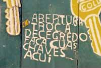

Deu branco na ortografia de uma palavra? Não tem certeza se escreve com "z" ou com "s"? Você escreve um texto inteligente e interessante nos comentários e só depois que envia percebe que trocou as letras na hora de digitar? Seus problemas acabaram! Faça o download do corretor ortográfico em português integrado ao navegador e conquiste o respeito por suas opiniões online! ;)
Agora sério. Muitos policiais estão aderindo à esta poderosa ferramenta que é a internet, e é importante que os textos, comentários, Orkut, enfim, tudo que se escreve e é acessível a um sem número de pessoas, não apresente erros grosseiros de digitação ou escrita incorreta.Esta dica só serve se você utilizar o programa Firefox para navegar na rede. Se você ainda usa o Internet Explorer, que vem instalado junto com o Windows, deveria pensar bem e conhecer este navegador, que além de ser mais seguro tem muitos programas que podem ser incorporados à ele. Ah, e é gratuito, quer mais!? Clique aqui para baixar o Firefox para seu computador.
O bizu é a extensão (ou complemento) para o Firefox que funciona como corretor ortográfico. Igual ao que ocorre no Word ou outro processador de texto, quando você escreve a palavra de forma incorreta, ele a sublinha, e clicando com o botão direito do mouse, lhe dá sugestão da grafia correta, ou permite que você adicione a palavra se ela não estiver no banco de dados.
A instalação é moleza. Abra o Firefox, vá até a página para instalar primeiro o pacote de linguagem para português do Brasil. Clique lá no quadradinho verde escrito "Add to Firefox" para instalar. Ele vai pedir então para reiniciar o Firefox. Permita o reinício, e agora vá até o link para instalar o dicionário do corretor ortográfico para língua portuguesa . Ele vai pedir para reiniciar de novo. Permita, e depois que reiniciar, experimente digitar uma palavra com grafia incorreta em um formulário, por exemplo, para comentar este post. Voilá, agora ele alerta o erro!
Agora não tem mais desculpa para escrever "elecóptero" ou "coinsciência" ou "célebro"! Lembre-se, se você se deu ao trabalho de escrever um texto ou comentar um assunto, é porque deseja que sua opinião seja lida. E textos com erros grosseiros dificilmente são lidos, e quando o são, perdem em credibilidade. Eu por exemplo, depois que instalei este programa, só cometo erro agora de concordância, conjugação verbal e pontuação! ;)
Recaptulando os links:
Download do navegador Firefox. Pacote da Linguagem para Português do Brasil. Dicionário e corretor ortográfico Português-BR.
Obs: algumas vezes pode dar erro quando clica para instalar. O que você pode fazer, se for o caso, é ao invés de clicar no botão verde para instalar, clica lá com o botão direito do mouse e coloca "Salvar Link como". Daí pegue o arquivo que você salvou, que vai terminar com ".xpi", segure com o botão esquerdo do mouse e arraste para qualquer espaço dentro do Firefox. Assim ele vai instalar do arquivo direto de sua máquina.